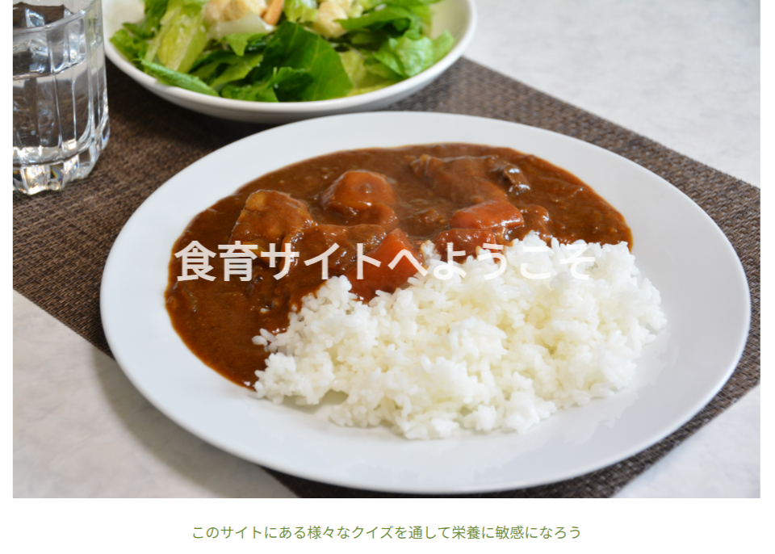
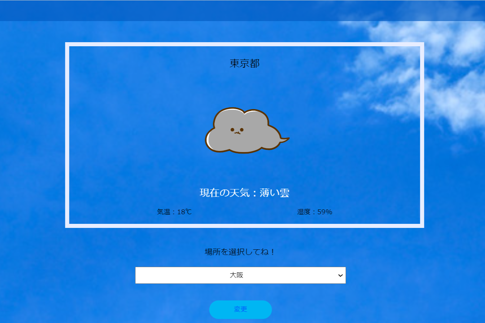
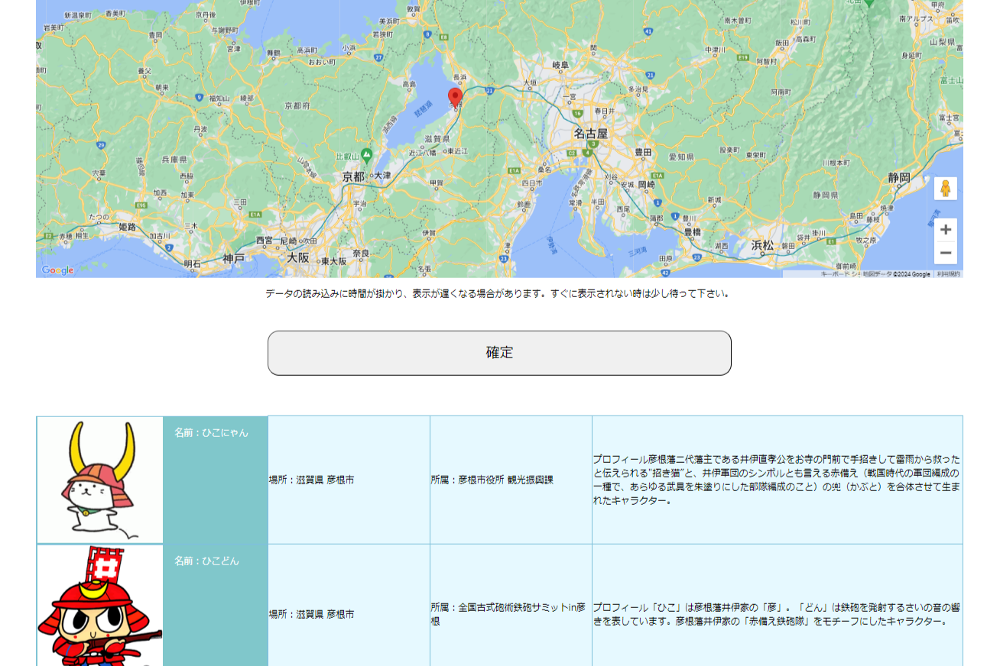

栄養クイズアプリ

使用言語：petite-vue
このアプリではクイズを通して、生活に欠かせない食事について知っておくと役立つことやことわざの知識が身に付けられるようになっています。 さらに、4択のクイズ形式にすることで手軽に楽しく取り組めて、結果発表ボタンを押すと点数やコメント、解答が表示されることで栄養に関する知識がどれだけあるのかが分かるようになっています。
天気アプリ

使用言語：petite-vue
生活する中で天気を確認する機会は多いため簡単な操作ですぐに直近の天気を確認できるアプリで、見た目も親しみやすいものがあるといいと感じたので、OpenWeatherMapAPIを使ってお天気アプリを作成していきました。そして、アプリには3時間ごと5日間の天気を載せて、起動時にその場所の現在の気温や湿度、天気が表示されるようにしました。
ゆるキャラアプリ

使用言語：petite-vue
自分の住んでいる地域や様々な場所のゆるキャラを知ってもらうことでゆるキャラの認知度向上に繋げたいと思いこのアプリを作成しました。 このアプリではグーグルマップ上でクリックすると赤色のマーカーが表示され、その後に確定ボタンを押すことで指定した場所のゆるキャラが表示されるようにしています。